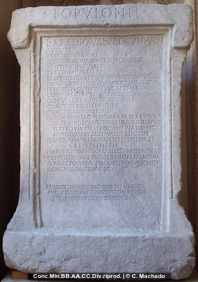
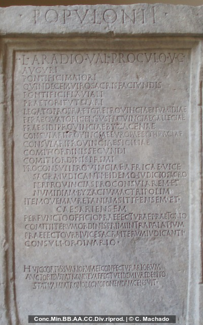
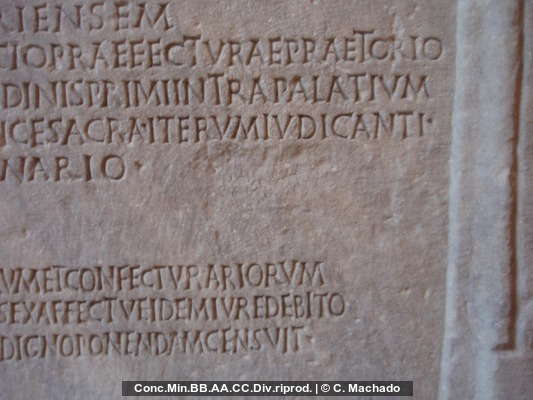
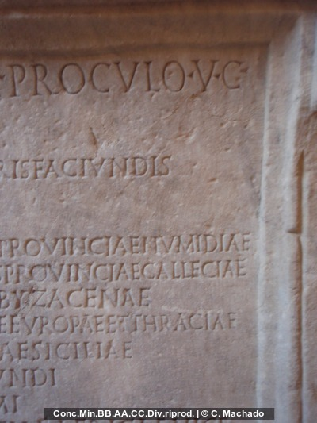
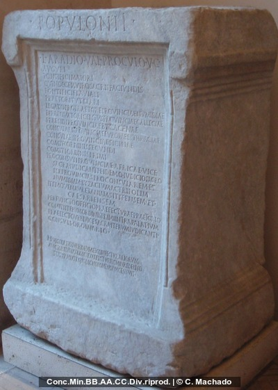

Descrizione
Supporto: Base di StatuaMateriale: sconosciuto
Tipo di iscrizione: Iscrizione onorifica
Tecnica di esecuzione: sconosciuto
Lettere:
Luogo di provenienza: Roma, Roma
Luogo di ritrovamento: Roma, , Italia
Date: 340 AD
Bibliografia:
- AE 1976, 0015.
- A. Chastagnol, in: Mélanges offerts à Jacques Heurgon 1 (Paris 1976) 125-131; fig. 1-2. - AE 1976.
- CIL 06, 01690.
Text
12 L(ucio) Aradio Val(erio) Proculo v(iro) c(larissimo)
auguri
pontifici maiori
quindecemviro sacris faciundis
5pontifici Flaviali
praetori tutelari
legato pro praetore provinciae Numidiae
peraequatori census provinciae Calleciae
praesidi provinciae Byzacenae
10consulari provinciae Europae et Thraciae
consulari provinciae Siciliae
comiti ordinis secundi
comiti ordinis primi
proconsuli provinciae Africae vice
15sacra iudicanti eidemq(ue) iudicio sacro
per provincias proconsularem et Numidiam Byzacium ac Tripolim
itemque Mauretaniam Sitifensem et Caesariensem
perfuncto officio praefecturae praetorio
comiti iterum ordinis primi intra palatium
20praefecto urbi vice sacra iterum iudicanti
consuli ordinario
huic corpus suariorum et confecturariorum
auctoribus patronis ex affectu eidem iure debito
statuam patrono digno ponendam censuit
auguri
pontifici maiori
quindecemviro sacris faciundis
5pontifici Flaviali
praetori tutelari
legato pro praetore provinciae Numidiae
peraequatori census provinciae Calleciae
praesidi provinciae Byzacenae
10consulari provinciae Europae et Thraciae
consulari provinciae Siciliae
comiti ordinis secundi
comiti ordinis primi
proconsuli provinciae Africae vice
15sacra iudicanti eidemq(ue) iudicio sacro
per provincias proconsularem et Numidiam Byzacium ac Tripolim
itemque Mauretaniam Sitifensem et Caesariensem
perfuncto officio praefecturae praetorio
comiti iterum ordinis primi intra palatium
20praefecto urbi vice sacra iterum iudicanti
consuli ordinario
huic corpus suariorum et confecturariorum
auctoribus patronis ex affectu eidem iure debito
statuam patrono digno ponendam censuit
File sorgente prodotto da: EAGLE - Europeana Network of Ancient Greek and Latin Epigraphy
See on GIT.
Foto

Traduzione:
Commento:
ATTENZIONE: QUESTO FILE è STATO MODIFICATO A SCOPO DIMOSTRATIVO E NON è UN'EDIZIONE VALIDA DEL TESTO PRESENTATO